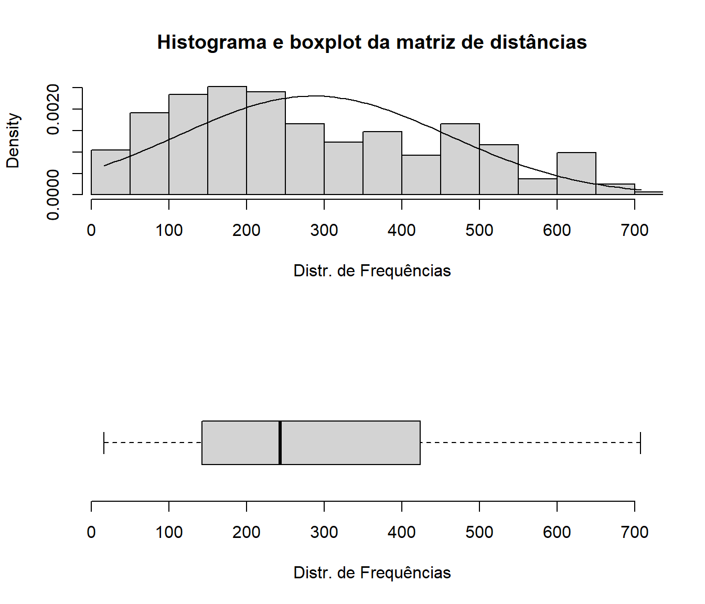

20 R Modulo 5 - Relativizações e transformações
RESUMO
Transformações e relativizações de dados são técnicas essenciais na análise de dados em Ecologia Numérica, permitindo comparar diferentes variáveis que estão em escalas diferentes ou que possuem unidades distintas.
Apresentação
O R é uma ferramenta poderosa para realização dessas operações, com diversos pacotes disponíveis para essa finalidade. Neste tutorial, iremos explorar algumas das principais funções do pacote vegan, que permite realizar transformações e relativizações de dados de forma simples e eficiente. Além disso, também utilizaremos outras bibliotecas importantes para reorganização e visualozação de dados. O tutorial irá abordar desde as operações básicas, como filtragem e seleção de dados, até as transformações mais complexas, como a normalização de dados e a relativização por medidas de biomassa ou área. Com exemplos práticos e ilustrações gráficas, o objetivo é permitir que os usuários do R possam aplicar essas técnicas em suas próprias análises e estudos de Ecologia Numérica. Ao final do tutorial, espera-se que o usuário esteja apto a realizar transformações e relativizações de dados em suas próprias análises, aumentando a qualidade e a precisão dos resultados obtidos.
20.1 Organização básica
dev.off() #apaga os graficos, se houver algum
rm(list=ls(all=TRUE)) #limpa a memória
cat("\014") #limpa o console Instalando os pacotes necessários para esse módulo
install.packages("openxlsx") #importa arquivos do excel
install.packages("moments") #calcula assimetria e curtose dos dados
install.packages("vegan") #estatisticas para ecologia de comunidadesAgora vamos definir o diretório de trabalho. Esse código é usado para obter e definir o diretório de trabalho atual no R. O comando getwd() retorna o caminho do diretório onde o R está lendo e salvando arquivos. O comando setwd() muda esse diretório de trabalho para o caminho especificado entre aspas. No seu caso, você deve ajustar o caminho para o seu próprio diretório de trabalho. Lembre de usar a barra “/” entre os diretórios. E não a contra-barra “\”.
Definindo o diretório de trabalho e installando os pacotes necessários:
20.1.1 Importando a planilha
Note que o símbolo # em programação R significa que o texto que vem depois dele é um comentário e não será executado pelo programa. Isso é útil para explicar o código ou deixar anotações.
- Ajuste a primeira linha do código abaixo para refletir “C:/Seu/Diretório/De/Trabalho/Planilha.xlsx”.
- Ajuste o parâmetro sheet = "Sheet1" para refletir a aba correta do arquivo .xlsx a ser importado.
library(openxlsx)
#dir <- getwd() #criamos um vetor com o diretório de trbalho
#shell.exec(dir) #abre o diretorio de trabalho no Windows Explorer
m_bruta <- read.xlsx("D:/Elvio/OneDrive/Disciplinas/_EcoNumerica/5.Matrizes/ppbio06c-peixes.xlsx",
rowNames = T, colNames = T,
sheet = "Sheet1")
str(m_bruta)
#View(m_bruta)
m_bruta[1:5,1:5] #[1:5,1:5] mostra apenas as linhas e colunas de 1 a 5.## 'data.frame': 26 obs. of 35 variables:
## $ ap-davis : num 0 0 0 0 0 0 0 0 0 0 ...
## $ as-bimac : num 1 99 194 19 23 142 5 46 206 16 ...
## $ as-fasci : num 0 0 55 0 1 3 1 0 64 0 ...
## $ ch-bimac : num 0 0 0 0 13 3 0 178 0 0 ...
## $ ci-ocela : num 0 0 0 0 0 0 40 0 0 13 ...
## $ ci-orien : num 0 0 5 0 0 69 9 0 25 24 ...
## $ co-macro : num 0 0 0 0 0 0 0 0 0 0 ...
## $ co-heter : num 0 0 1 0 0 0 0 0 0 0 ...
## $ cr-menez : num 0 0 14 0 0 4 0 0 8 0 ...
## $ cu-lepid : num 0 0 0 0 0 0 0 0 0 0 ...
## $ cy-gilbe : num 0 0 0 0 0 0 0 0 0 0 ...
## $ ge-brasi : num 0 0 3 0 0 0 0 0 1 0 ...
## $ he-margi : num 0 0 0 0 0 1 0 0 0 0 ...
## $ ho-malab : num 0 0 1 5 0 17 10 2 31 4 ...
## $ hy-pusar : num 0 0 9 2 0 43 2 0 11 0 ...
## $ le-melan : num 0 0 0 0 0 0 0 0 0 0 ...
## $ le-piau : num 0 0 3 0 0 1 3 0 2 1 ...
## $ le-taeni : num 0 0 0 0 0 0 0 0 0 0 ...
## $ mo-costa : num 0 0 0 0 0 0 0 0 0 0 ...
## $ mo-lepid : num 0 1 39 0 0 1 0 0 0 0 ...
## $ or-nilot : num 0 2 36 0 0 77 0 0 138 0 ...
## $ pa-manag : num 0 0 0 0 0 0 0 0 0 0 ...
## $ pimel-sp : num 0 0 6 0 0 0 0 0 0 0 ...
## $ po-retic : num 0 0 0 0 0 20 0 0 5 0 ...
## $ po-vivip : num 0 0 47 15 0 221 32 0 326 10 ...
## $ pr-brevi : num 9 0 5 0 1 15 5 2 164 0 ...
## $ ps-rhomb : num 0 0 0 0 0 0 0 0 1 0 ...
## $ ps-genise: num 0 0 0 0 0 0 0 0 1 0 ...
## $ se-heter : num 0 0 40 14 4 60 0 0 38 0 ...
## $ se-piaba : num 0 0 68 0 0 0 0 0 0 0 ...
## $ se-spilo : num 0 0 0 0 0 0 0 0 1 0 ...
## $ st-noton : num 0 0 1 0 0 25 0 0 115 0 ...
## $ sy-marmo : num 0 0 0 0 0 0 1 0 0 0 ...
## $ te-chalc : num 0 0 0 0 0 0 0 0 0 0 ...
## $ tr-signa : num 0 0 18 0 0 15 0 0 7 0 ...
## ap-davis as-bimac as-fasci ch-bimac ci-ocela
## S-A-ZA1 0 1 0 0 0
## S-R-CC1 0 99 0 0 0
## S-R-CT1 0 194 55 0 0
## S-R-CP1 0 19 0 0 0
## S-A-TA1 0 23 1 13 0Exibindo os dados importados (esses comando são “case-sensitive” ignore.case(object)).
Podemos exibir a planilha depois de ter sido importada para o ambiente R/RStudio usando as funções View(), print() ou head(). Note que essas funções são case-sensitive. A função ignore.case() é uma função do pacote stringr que modifica um padrão para que ele não considere o caso das letras nas correspondências. Por exemplo, se você quiser encontrar todas as ocorrências da letra “a” em um vetor de caracteres, independente de ser “A” ou “a”, você pode usar essa função.
A função head() no RStudio é uma forma de ver as primeiras (n=6) linhas de um objeto, como um vetor, uma matriz, um data frame ou uma lista. Ela é útil para ter uma ideia do conteúdo e da estrutura do objeto.
Também podemos explorar as características da planilha usando as funções str(), mode(), class() e length(). O número de observações ou tamanho do vetor depende do tipo de dados, se eles são uma matrix ou um data.frame.
Abreviações
No interesse de sistematizar o código R das várias matrizes que são comumente usadas em uma AMD, a tabela 20.1, a seguir, resume seus tipos e abreviações.
| Nome | Atributos (colunas) | Abreviação no R |
|---|---|---|
| Matriz comunitaria | Os atributos são táxons ou OTU’s (Unidades Taxonômicas Operacionais) (ex. espécies, gêneros, morfotipos) | m_com |
| Matriz ambiental | Os atributos são dados ambientais e variáveis físicas e químicas (ex. pH, condutividade, temperatura) | m_amb |
| Matriz de habitat | Os atributos são elementos da estrutura do habitat (ex. macróficas, algas, pedras, lama, etc) | m_hab |
| Matriz bruta | Os atributos ainda não receberam nenhum tipo de tratamento estatísco (valores brutos, como coletados) | m_bruta |
| Matriz transposta | Os atributos foram transpostos para as linhas | m_t |
| Matriz relativizada | Os atributos foram relativizados por um critério de tamanho ou de variação (ex. dividir os valores de cada coluna pela soma) | m_rel, m_relcol, m_rellin |
| Matriz transformada | Foi aplicado um operador matemático a todos os atributos (ex. raiz quadrada, log) | m_trns, m_log10, m_asrq |
| Matriz de distâncias | Matriz de m x m similaridades ou de distâncias (ex. Euclidiana, Manhattan, Bray-Curtis, etc) | m_dists, m_euclid, m_bray |
| Matriz de trabalho | Qualquer matriz que seja o foco da análise atual (ex. comunitária, relativizada, etc) | m_trab |
| Matriz particionada | Foram removidas linhas ou colunas (ex. linhas que são outliers e espécies zeradas) | m_part |
| Base de dados | Arquivo do Excel planilhado a partir de dados de campo ou de laboratório. Será manejada e particionada no R, para criar a Matriz bruta | ppbio06.xlsx, zoorebio.xlsx, bentos06.xlsx |
20.2 Tamanho da matriz
Podemos agora calcular o número e a proporção de zeros na matriz usando as funções sum() e length() (Você pode pesquisar o que faz a função length() usando o comando ?length).
range(m_bruta) #menor e maior valores
length(m_bruta) #no. de colunas
ncol(m_bruta) #no. de N colunas
nrow(m_bruta) #no. de M linhas
sum(lengths(m_bruta)) #soma os nos. de colunas
length(as.matrix(m_bruta)) #tamanho da matriz m x n
sum(m_bruta == 0) # número de observações igual a zero
sum(m_bruta > 0) # número de observações maiores que zero
zeros <- (sum(m_bruta == 0)/length(as.matrix(m_bruta)))*100 # proporção de zeros na matriz
zeros## [1] 0 511
## [1] 35
## [1] 35
## [1] 26
## [1] 910
## [1] 910
## [1] 716
## [1] 194
## [1] 78.68132Tabela que resume as informações geradas (20.2).
tamanho <- data.frame(
Comando = c("range", "lenght", "m cols", "n linhas", "Tamanho", "Tamanho",
"Zeros", "Nao zeros", "% Zeros"),
Resultado = c(paste(range(m_bruta), collapse = " - "), length(m_bruta), ncol(m_bruta),
nrow(m_bruta), sum(lengths(m_bruta)), length(as.matrix(m_bruta)), sum(m_bruta == 0),
sum(m_bruta > 0), round(zeros, 1)))
tamanho## Comando Resultado
## 1 range 0 - 511
## 2 lenght 35
## 3 m cols 35
## 4 n linhas 26
## 5 Tamanho 910
## 6 Tamanho 910
## 7 Zeros 716
## 8 Nao zeros 194
## 9 % Zeros 78.7| Comando | Resultado |
|---|---|
| range | 0 - 511 |
| lenght | 35 |
| m cols | 35 |
| n linhas | 26 |
| Tamanho | 910 |
| Tamanho | 910 |
| Zeros | 716 |
| Nao zeros | 194 |
| % Zeros | 78.7 |
Ou seja, temos uma matriz de tamanho m x n igual a 26 objetos por 35 atributos, onde 78.68% dos valores da matriz são iguais a zero!
20.3 REINÍCIO 1
Aqui cria-se um novo objeto do R (m_trab, ou a matriz de trabalho, para esse momento) que substitui a matriz de dados original, por uma nova matriz que pode ser a matriz relativizada, transformada, transposta, etc. Dessa forma, mantemos a matriz de dados original caso precisemos dela novamente (Veja a Tabela Tabela @ref(tab:5tblm_2)).
20.4 Cálculo da matriz de distâncias
Agora vamos calcular a matriz de distâncias euclidiana (BORCARD; GILLET; LEGENDRE, 2018; LEGENDRE; LEGENDRE, 1998) entre as UA´s usando a função dist() (pesquise o que faz essa função usando o comando ?dist).
Pronto, calculamos a matriz de distâncias (euclidiana). Agora podemos visualizar a matriz.
#m_dists
str(m_dists)
mode(m_dists)
class(m_dists)
length(as.matrix(m_dists))
as.matrix(m_dists)[1:10, 1:10]## 'dist' num [1:325] 98.4 228.5 29.2 27.1 294.1 ...
## - attr(*, "Size")= int 26
## - attr(*, "Labels")= chr [1:26] "S-A-ZA1" "S-R-CC1" "S-R-CT1" "S-R-CP1" ...
## - attr(*, "Diag")= logi TRUE
## - attr(*, "Upper")= logi FALSE
## - attr(*, "method")= chr "euclidean"
## - attr(*, "call")= language dist(x = m_trab, method = "euclidian", diag = TRUE, upper = FALSE)
## [1] "numeric"
## [1] "dist"
## [1] 676
## S-A-ZA1 S-R-CC1 S-R-CT1 S-R-CP1 S-A-TA1 S-R-CT2 S-R-CP2
## S-A-ZA1 0.00000 98.43780 228.5235 29.24038 27.09243 294.0629 53.40412
## S-R-CC1 98.43780 0.00000 154.2433 82.79493 77.25283 261.3905 108.10180
## S-R-CT1 228.52352 154.24331 0.0000 208.52338 209.69263 224.9133 224.09150
## S-R-CP1 29.24038 82.79493 208.5234 0.00000 23.25941 271.4922 49.22398
## S-A-TA1 27.09243 77.25283 209.6926 23.25941 0.00000 283.7869 57.82733
## S-R-CT2 294.06292 261.39051 224.9133 271.49217 283.78689 0.0000 268.95167
## S-R-CP2 53.40412 108.10180 224.0915 49.22398 57.82733 268.9517 0.00000
## S-A-TA2 183.74439 185.75791 261.8301 181.24845 166.66133 326.3327 190.15257
## S-R-CT3 460.42155 428.64437 366.6429 443.90877 453.59674 238.3799 438.54532
## S-R-CP3 34.17601 88.06816 215.2557 31.32092 33.13608 275.0436 40.37326
## S-A-TA2 S-R-CT3 S-R-CP3
## S-A-ZA1 183.7444 460.4215 34.17601
## S-R-CC1 185.7579 428.6444 88.06816
## S-R-CT1 261.8301 366.6429 215.25566
## S-R-CP1 181.2484 443.9088 31.32092
## S-A-TA1 166.6613 453.5967 33.13608
## S-R-CT2 326.3327 238.3799 275.04363
## S-R-CP2 190.1526 438.5453 40.37326
## S-A-TA2 0.0000 478.9008 182.86060
## S-R-CT3 478.9008 0.0000 449.24826
## S-R-CP3 182.8606 449.2483 0.00000Uma matriz do tipo dist no R é um objeto que armazena as distâncias entre as linhas de uma matriz ou um data frame. Ela é criada pela função dist(), que calcula as distâncias usando diferentes medidas, como “euclidean”, “manhattan”, “canberra”, “binary” ou “minkowski” (HORTON; KLEINMAN, 2015).
range(m_trab)
range(m_dists)
min(m_dists)
max(m_dists)
mean(m_dists) #CENTROIDE!! ou Grand mean
sd(m_dists) #standard deviation
centroide <- mean(m_dists)
centroide## [1] 0 511
## [1] 16.27882 707.32666
## [1] 16.27882
## [1] 707.3267
## [1] 285.9043
## [1] 172.9708
## [1] 285.9043A função mean() calcula a média de todos os valores da matriz de distâncias, ou seja, a média multivariada, que é o centróide. Nesse caso o centroide assume o valor de 285.9. Usamos agora a fórmula n*(n-1)/2, onde n é o no. de objetos sendo comparados, para calcular quantas distâcias temos na nossa matriz.
## [1] 325
## [1] 26
## [1] 325
## Min. 1st Qu. Median Mean 3rd Qu. Max.
## 16.28 142.70 242.82 285.90 423.64 707.33Temos então que n é 26 objetos (ou linhas), e portanto, a matriz de distâncias tem 325 valores. Fazemos agora um breve sumário do que foi calculado até agora com base na matriz de distâncias.
Sumario1 <- cbind(min(m_dists),
max(m_dists),
sd(m_dists),
mean(m_dists),
length(m_dists))
colnames(Sumario1) <- c("Minimo", "Maximo", "Desv.Padr", "Media", "m(m-1)/2")
rownames(Sumario1) <- ("Valores")
Sumario1## Minimo Maximo Desv.Padr Media m(m-1)/2
## Valores 16.27882 707.3267 172.9708 285.9043 325A matriz m_dists está como uma classe dist, mas podemos transformá-la em uma classe matrix usando a função as.matrix().
dist <- (as.matrix(m_dists))
#View(dist)
str(dist)
mode(dist)
class(dist)
#head(dist)
dist[1:5, 1:5] #mostra as 5 primeiras linhas e colunas da matriz## num [1:26, 1:26] 0 98.4 228.5 29.2 27.1 ...
## - attr(*, "dimnames")=List of 2
## ..$ : chr [1:26] "S-A-ZA1" "S-R-CC1" "S-R-CT1" "S-R-CP1" ...
## ..$ : chr [1:26] "S-A-ZA1" "S-R-CC1" "S-R-CT1" "S-R-CP1" ...
## [1] "numeric"
## [1] "matrix" "array"
## S-A-ZA1 S-R-CC1 S-R-CT1 S-R-CP1 S-A-TA1
## S-A-ZA1 0.00000 98.43780 228.5235 29.24038 27.09243
## S-R-CC1 98.43780 0.00000 154.2433 82.79493 77.25283
## S-R-CT1 228.52352 154.24331 0.0000 208.52338 209.69263
## S-R-CP1 29.24038 82.79493 208.5234 0.00000 23.25941
## S-A-TA1 27.09243 77.25283 209.6926 23.25941 0.00000Visualizando a matriz de distâncias, observamos que ela é uma matriz quadrada que contém as distâncias entre cada par de elementos do conjuto de dados. A matriz de distâncias terá dimensão n x n, e cada elemento da matriz será a distância entre cada par de observações ou objetos. A matriz de distâncias é simétrica, pois a distância entre i e j é igual à distância entre j e i. A matriz de distâncias também tem diagonal zero, pois a distância entre uma observação e ela mesma é zero.
20.5 Distribuição de frequência da matriz de distâncias
Por fim, vamos produzir uma distribuição de frequência da matriz de distâncias, mas antes vamos explorar alguns parâmetros básicos da matriz de distâncias, como o intervalo, a média e o desvio padrão. Para isso, usamos as funções range(), mean() e sd() do R.
20.5.1 Calculando alguns parâmetros básicos
range(m_dists) # intervalo dos valores da matriz
mean(m_dists) # média dos valores da matriz
sd(m_dists) # desvio padrão dos valores da matriz## [1] 16.27882 707.32666
## [1] 285.9043
## [1] 172.9708Esses comandos mostram que o menor, maior valores na matriz de distância foram 16.28, 707.33, enquanto que a média foi de 285.9 com um desvio padrão de 172.97.
IMPORTANTE
Lembre que no R e RStudio, a vírgula é usada como separador de decimal e o ponto é apenas indicador de milhar. Por exemplo, 2.500,50 lê-se dois mil e quinhentos e 50 décimos.
Também podemos calcular a assimetria e a curtose da matriz de distâncias, que são medidas que indicam o grau de desvio da normalidade da distribuição. Para isso, precisamos carregar o pacote moments, que contém as funções skewness() (assimetria) e kurtosis() (curtose).
20.5.2 Calculando a assimetria e a curtose
library(moments)
sk <- skewness(as.matrix(m_dists)) #calcula a assimetria da matriz
ku <- kurtosis(as.matrix(m_dists)) #calcula a curtose da matriz
sku <- cbind(sk,ku) # junta os dois valores em um vetor
colnames(sku) <- c("assimetria", "curtose") # nomeia as colunas do vetor
sku[1:10, ] # mostra as primeiras 10 linhas desse vetor
summary(sku) # mostra um resumo estatístico do vetor## assimetria curtose
## S-A-ZA1 1.03617037 3.101029
## S-R-CC1 1.21511849 3.852134
## S-R-CT1 0.91278496 6.263889
## S-R-CP1 1.06839482 3.177206
## S-A-TA1 1.07960546 3.220821
## S-R-CT2 0.05290597 6.265832
## S-R-CP2 1.08571040 3.241712
## S-A-TA2 1.25111833 4.838956
## S-R-CT3 -2.35918827 10.736848
## S-R-CP3 1.06511174 3.178170
## assimetria curtose
## Min. :-3.9660 Min. : 2.946
## 1st Qu.: 0.1891 1st Qu.: 3.226
## Median : 1.0531 Median : 3.793
## Mean : 0.3625 Mean : 5.248
## 3rd Qu.: 1.1593 3rd Qu.: 5.659
## Max. : 1.2826 Max. :18.79920.6 Distribuição de frequências da matriz de distâncias
Agora que temos uma ideia dos parâmetros básicos da matriz de distâncias, vamos entender sua distribuição de frequência usando um histograma e um boxplot. O histograma mostra a frequência relativa de cada intervalo de valores da matriz, enquanto o boxplot mostra a mediana, os quartis e os valores extremos da matriz.
Para fazer os gráficos, usamos as funções hist() e boxplot.default() do R. Também usamos a função curve() para sobrepor uma curva de normalidade ao histograma, e a função par para ajustar os parâmetros gráficos.
Nas linhas xlim = (), # limites dos eixos do código abaixo, os limites dos eixos do gráfico a ser criado foram definidos entre 0 e 707.3266572. No seu caso, você deve ajustar os valores de xlim para que eles sejam os limites dos valores da sua matriz, definidos pela linha range(dist) (primeira linha do código abaixo).
Em resumo, o código abaixo plota um histograma e um boxplot da distribuição de dados armazenada na matriz de distâncias. Também é adicionada uma curva normal teórica ao histograma utilizando a média e o desvio padrão dos dados (Figura 20.1. As funções floor(min(m_dists)) e ceiling(max(m_dists)) definem os limites dos graficos pelo valores mínimo e máximo do objeto.
range(m_dists)
par(mfrow=c(2,1)) # esse comando faz os gráficos aparecerem um acima do outro
hist(m_dists,
breaks = 20, # determina o número de colunas do histograma
xlim = range(floor(min(m_dists)), ceiling(max(m_dists))), # limites dos eixos
xlab = "Distr. de Frequências",
freq = FALSE, # mostra as frequências relativas em vez das absolutas
main = "Histograma e boxplot da matriz de distâncias")
curve(dnorm(x, mean=mean(m_dists), sd=sd(m_dists)), add=TRUE) # sobrepõe a curva de normalidade
boxplot.default(m_dists, horizontal = TRUE, frame = FALSE,
xlab="Distr. de Frequências",
ylim=c(floor(min(m_dists)), ceiling(max(m_dists)))) # limites dos eixos
Figura 20.1: Distribuições de frequências da matriz de distâncias
## [1] 16.27882 707.32666O comando abaixo apaga os gráficos.
20.7 Relativizando e transformando a base de dados
Na sequencia de códigos a seguir o R realiza relativizações e transformações em dados biológicos (SOKAL; ROHLF, 1995). Vamos ver passo a passo o que cada seção do código faz. Os códigos para as demais principais relativizações estão nos Apêndices
Essa linha carrega o pacote vegan no ambiente R, permitindo o uso de suas funções. O pacote vegan é um pacote do R para análise de ecologia numérica e comunidades biológicas. Ele fornece uma ampla variedade de funções para análise de dados ecológicos, como análise de diversidade, ordenação de espécies, análise de similaridade, entre outras.
A função decostand() é usada para relativizar os dados armazenados na matriz de trabalho (m_trab). O parâmetro method especifica o método de relativização, neste caso “total” (relativização pelo total de cada coluna). Outros métodos disponíveis são max, normalize, range e rankm (@ref(tab:(5tbl-rel)). O parâmetro MARGIN especifica em qual dimensão os cálculos devem ser feitos (1 para linhas, 2 para colunas). Neste caso, MARGIN=2 (colunas). A variável m_relcol armazena o resultado da relativização. Sokal e Rohlf (SOKAL; ROHLF, 2009) tratam dos diversos tipos de relativizações e transformações em dados ecológicos.
20.7.1 Relativização pelo total
## ap-davis as-bimac as-fasci ch-bimac ci-ocela ci-orien
## S-A-ZA1 0.0000000 0.0004191115 0.000000000 0.000000000 0.00000000 0.00000000
## S-R-CC1 0.0000000 0.0414920369 0.000000000 0.000000000 0.00000000 0.00000000
## S-R-CT1 0.0000000 0.0813076278 0.348101266 0.000000000 0.00000000 0.03496503
## S-R-CP1 0.0000000 0.0079631182 0.000000000 0.000000000 0.00000000 0.00000000
## S-A-TA1 0.0000000 0.0096395641 0.006329114 0.018439716 0.00000000 0.00000000
## S-R-CT2 0.0000000 0.0595138307 0.018987342 0.004255319 0.00000000 0.48251748
## S-R-CP2 0.0000000 0.0020955574 0.006329114 0.000000000 0.57142857 0.06293706
## S-A-TA2 0.0000000 0.0192791282 0.000000000 0.252482270 0.00000000 0.00000000
## S-R-CT3 0.0000000 0.0863369656 0.405063291 0.000000000 0.00000000 0.17482517
## S-R-CP3 0.0000000 0.0067057837 0.000000000 0.000000000 0.18571429 0.16783217
## S-A-TA3 0.0000000 0.0980720872 0.044303797 0.337588652 0.00000000 0.00000000
## S-R-CT4 0.0000000 0.0000000000 0.006329114 0.000000000 0.00000000 0.03496503
## S-R-CP4 0.0000000 0.0000000000 0.000000000 0.000000000 0.15714286 0.04195804
## S-A-TA4 0.0000000 0.1651299246 0.000000000 0.387234043 0.00000000 0.00000000
## B-A-MU1 0.0000000 0.0050293378 0.000000000 0.000000000 0.00000000 0.00000000
## B-R-ET1 0.0000000 0.0012573345 0.000000000 0.000000000 0.00000000 0.00000000
## B-A-GU1 0.0000000 0.0008382230 0.012658228 0.000000000 0.00000000 0.00000000
## B-R-PC2 0.1851852 0.0184409053 0.000000000 0.000000000 0.02857143 0.00000000
## B-A-MU2 0.0000000 0.0414920369 0.000000000 0.000000000 0.00000000 0.00000000
## B-A-GU2 0.0000000 0.0000000000 0.000000000 0.000000000 0.00000000 0.00000000
## B-R-PC3 0.8148148 0.0314333613 0.044303797 0.000000000 0.05714286 0.00000000
## B-A-MU3 0.0000000 0.2141659681 0.000000000 0.000000000 0.00000000 0.00000000
## B-A-GU3 0.0000000 0.0025146689 0.000000000 0.000000000 0.00000000 0.00000000
## B-R-PC4 0.0000000 0.0029337804 0.107594937 0.000000000 0.00000000 0.00000000
## B-A-MU4 0.0000000 0.0984911987 0.000000000 0.000000000 0.00000000 0.00000000
## B-A-GU4 0.0000000 0.0054484493 0.000000000 0.000000000 0.00000000 0.00000000
## co-macro co-heter cr-menez cu-lepid cy-gilbe ge-brasi he-margi
## S-A-ZA1 0 0 0.00000000 0 0.0000000 0.0000000000 0.0
## S-R-CC1 0 0 0.00000000 0 0.0000000 0.0000000000 0.0
## S-R-CT1 0 1 0.50000000 0 0.0000000 0.0029411765 0.0
## S-R-CP1 0 0 0.00000000 0 0.0000000 0.0000000000 0.0
## S-A-TA1 0 0 0.00000000 0 0.0000000 0.0000000000 0.0
## S-R-CT2 0 0 0.14285714 0 0.0000000 0.0000000000 0.5
## S-R-CP2 0 0 0.00000000 0 0.0000000 0.0000000000 0.0
## S-A-TA2 0 0 0.00000000 0 0.0000000 0.0000000000 0.0
## S-R-CT3 0 0 0.28571429 0 0.0000000 0.0009803922 0.0
## S-R-CP3 0 0 0.00000000 0 0.0000000 0.0000000000 0.0
## S-A-TA3 1 0 0.00000000 0 0.0000000 0.0000000000 0.0
## S-R-CT4 0 0 0.03571429 0 0.3816794 0.0029411765 0.5
## S-R-CP4 0 0 0.00000000 0 0.0000000 0.0000000000 0.0
## S-A-TA4 0 0 0.03571429 0 0.0000000 0.0009803922 0.0
## B-A-MU1 0 0 0.00000000 0 0.0000000 0.1862745098 0.0
## B-R-ET1 0 0 0.00000000 0 0.0000000 0.0000000000 0.0
## B-A-GU1 0 0 0.00000000 0 0.0000000 0.0068627451 0.0
## B-R-PC2 0 0 0.00000000 0 0.0000000 0.0078431373 0.0
## B-A-MU2 0 0 0.00000000 0 0.0000000 0.0656862745 0.0
## B-A-GU2 0 0 0.00000000 0 0.0000000 0.0225490196 0.0
## B-R-PC3 0 0 0.00000000 1 0.0000000 0.0156862745 0.0
## B-A-MU3 0 0 0.00000000 0 0.0000000 0.1421568627 0.0
## B-A-GU3 0 0 0.00000000 0 0.0000000 0.0313725490 0.0
## B-R-PC4 0 0 0.00000000 0 0.6183206 0.0049019608 0.0
## B-A-MU4 0 0 0.00000000 0 0.0000000 0.4990196078 0.0
## B-A-GU4 0 0 0.00000000 0 0.0000000 0.0098039216 0.0
## ho-malab hy-pusar le-melan le-piau le-taeni mo-costa mo-lepid
## S-A-ZA1 0.000000000 0.00000000 0 0.00000000 0 0 0.00000000
## S-R-CC1 0.000000000 0.00000000 0 0.00000000 0 0 0.02439024
## S-R-CT1 0.009174312 0.12676056 0 0.20000000 0 0 0.95121951
## S-R-CP1 0.045871560 0.02816901 0 0.00000000 0 0 0.00000000
## S-A-TA1 0.000000000 0.00000000 0 0.00000000 0 0 0.00000000
## S-R-CT2 0.155963303 0.60563380 0 0.06666667 0 0 0.02439024
## S-R-CP2 0.091743119 0.02816901 0 0.20000000 0 0 0.00000000
## S-A-TA2 0.018348624 0.00000000 0 0.00000000 0 0 0.00000000
## S-R-CT3 0.284403670 0.15492958 0 0.13333333 0 0 0.00000000
## S-R-CP3 0.036697248 0.00000000 0 0.06666667 0 0 0.00000000
## S-A-TA3 0.183486239 0.00000000 0 0.00000000 0 0 0.00000000
## S-R-CT4 0.036697248 0.04225352 0 0.00000000 0 0 0.00000000
## S-R-CP4 0.018348624 0.00000000 0 0.13333333 0 0 0.00000000
## S-A-TA4 0.082568807 0.00000000 0 0.13333333 0 0 0.00000000
## B-A-MU1 0.000000000 0.00000000 0 0.00000000 0 0 0.00000000
## B-R-ET1 0.000000000 0.00000000 0 0.00000000 0 0 0.00000000
## B-A-GU1 0.000000000 0.00000000 0 0.00000000 0 0 0.00000000
## B-R-PC2 0.000000000 0.00000000 1 0.00000000 1 0 0.00000000
## B-A-MU2 0.009174312 0.00000000 0 0.00000000 0 0 0.00000000
## B-A-GU2 0.000000000 0.00000000 0 0.00000000 0 0 0.00000000
## B-R-PC3 0.018348624 0.01408451 0 0.00000000 0 1 0.00000000
## B-A-MU3 0.000000000 0.00000000 0 0.00000000 0 0 0.00000000
## B-A-GU3 0.000000000 0.00000000 0 0.00000000 0 0 0.00000000
## B-R-PC4 0.009174312 0.00000000 0 0.06666667 0 0 0.00000000
## B-A-MU4 0.000000000 0.00000000 0 0.00000000 0 0 0.00000000
## B-A-GU4 0.000000000 0.00000000 0 0.00000000 0 0 0.00000000
## or-nilot pa-manag pimel-sp po-retic po-vivip pr-brevi
## S-A-ZA1 0.000000000 0.000000000 0 0.00000000 0.000000000 0.032258065
## S-R-CC1 0.002358491 0.000000000 0 0.00000000 0.000000000 0.000000000
## S-R-CT1 0.042452830 0.000000000 1 0.00000000 0.048057260 0.017921147
## S-R-CP1 0.000000000 0.000000000 0 0.00000000 0.015337423 0.000000000
## S-A-TA1 0.000000000 0.000000000 0 0.00000000 0.000000000 0.003584229
## S-R-CT2 0.090801887 0.000000000 0 0.05249344 0.225971370 0.053763441
## S-R-CP2 0.000000000 0.000000000 0 0.00000000 0.032719836 0.017921147
## S-A-TA2 0.000000000 0.000000000 0 0.00000000 0.000000000 0.007168459
## S-R-CT3 0.162735849 0.000000000 0 0.01312336 0.333333333 0.587813620
## S-R-CP3 0.000000000 0.000000000 0 0.00000000 0.010224949 0.000000000
## S-A-TA3 0.000000000 0.000000000 0 0.00000000 0.000000000 0.000000000
## S-R-CT4 0.086084906 0.000000000 0 0.00000000 0.028629857 0.211469534
## S-R-CP4 0.000000000 0.000000000 0 0.00000000 0.081799591 0.000000000
## S-A-TA4 0.001179245 0.000000000 0 0.00000000 0.000000000 0.010752688
## B-A-MU1 0.007075472 0.000000000 0 0.00000000 0.000000000 0.000000000
## B-R-ET1 0.009433962 0.001805054 0 0.08923885 0.000000000 0.000000000
## B-A-GU1 0.003537736 0.019855596 0 0.00000000 0.000000000 0.000000000
## B-R-PC2 0.005896226 0.000000000 0 0.00000000 0.000000000 0.032258065
## B-A-MU2 0.001179245 0.000000000 0 0.02624672 0.008179959 0.000000000
## B-A-GU2 0.042452830 0.184115523 0 0.00000000 0.000000000 0.000000000
## B-R-PC3 0.076650943 0.000000000 0 0.00000000 0.000000000 0.021505376
## B-A-MU3 0.012971698 0.000000000 0 0.12073491 0.049079755 0.003584229
## B-A-GU3 0.291273585 0.451263538 0 0.00000000 0.000000000 0.000000000
## B-R-PC4 0.010613208 0.000000000 0 0.00000000 0.000000000 0.000000000
## B-A-MU4 0.001179245 0.000000000 0 0.69816273 0.166666667 0.000000000
## B-A-GU4 0.152122642 0.342960289 0 0.00000000 0.000000000 0.000000000
## ps-rhomb ps-genise se-heter se-piaba se-spilo st-noton sy-marmo
## S-A-ZA1 0 0 0.00000000 0 0 0.000000000 0
## S-R-CC1 0 0 0.00000000 0 0 0.000000000 0
## S-R-CT1 0 0 0.13513514 1 0 0.004878049 0
## S-R-CP1 0 0 0.04729730 0 0 0.000000000 0
## S-A-TA1 0 0 0.01351351 0 0 0.000000000 0
## S-R-CT2 0 0 0.20270270 0 0 0.121951220 0
## S-R-CP2 0 0 0.00000000 0 0 0.000000000 1
## S-A-TA2 0 0 0.00000000 0 0 0.000000000 0
## S-R-CT3 1 1 0.12837838 0 1 0.560975610 0
## S-R-CP3 0 0 0.00000000 0 0 0.000000000 0
## S-A-TA3 0 0 0.00000000 0 0 0.000000000 0
## S-R-CT4 0 0 0.01013514 0 0 0.312195122 0
## S-R-CP4 0 0 0.01013514 0 0 0.000000000 0
## S-A-TA4 0 0 0.00000000 0 0 0.000000000 0
## B-A-MU1 0 0 0.00000000 0 0 0.000000000 0
## B-R-ET1 0 0 0.00000000 0 0 0.000000000 0
## B-A-GU1 0 0 0.00000000 0 0 0.000000000 0
## B-R-PC2 0 0 0.03378378 0 0 0.000000000 0
## B-A-MU2 0 0 0.00000000 0 0 0.000000000 0
## B-A-GU2 0 0 0.00000000 0 0 0.000000000 0
## B-R-PC3 0 0 0.31418919 0 0 0.000000000 0
## B-A-MU3 0 0 0.00000000 0 0 0.000000000 0
## B-A-GU3 0 0 0.00000000 0 0 0.000000000 0
## B-R-PC4 0 0 0.10472973 0 0 0.000000000 0
## B-A-MU4 0 0 0.00000000 0 0 0.000000000 0
## B-A-GU4 0 0 0.00000000 0 0 0.000000000 0
## te-chalc tr-signa
## S-A-ZA1 0.0000000 0.00000000
## S-R-CC1 0.0000000 0.00000000
## S-R-CT1 0.0000000 0.08653846
## S-R-CP1 0.0000000 0.00000000
## S-A-TA1 0.0000000 0.00000000
## S-R-CT2 0.0000000 0.07211538
## S-R-CP2 0.0000000 0.00000000
## S-A-TA2 0.0000000 0.00000000
## S-R-CT3 0.0000000 0.03365385
## S-R-CP3 0.0000000 0.00000000
## S-A-TA3 0.0000000 0.00000000
## S-R-CT4 0.0000000 0.67788462
## S-R-CP4 0.0000000 0.00000000
## S-A-TA4 0.0000000 0.00000000
## B-A-MU1 0.0000000 0.00000000
## B-R-ET1 0.0000000 0.00000000
## B-A-GU1 0.0000000 0.00000000
## B-R-PC2 0.5671642 0.11057692
## B-A-MU2 0.0000000 0.00000000
## B-A-GU2 0.0000000 0.00000000
## B-R-PC3 0.4328358 0.00000000
## B-A-MU3 0.0000000 0.00000000
## B-A-GU3 0.0000000 0.00000000
## B-R-PC4 0.0000000 0.01923077
## B-A-MU4 0.0000000 0.00000000
## B-A-GU4 0.0000000 0.0000000020.7.2 Transformação pelo arcoseno da raiz quadrada
A seguir é realizada a transformação pelo arcoseno da raiz quadrada, apropriada para ados em proporção como os ados previamente relativisados. Para cada transformação, a função é aplicada aos dados de interesse e o resultado é armazenado em uma nova variável. A função View() é usada para visualizar o resultado de cada transformação na forma de uma tabela. Os códigos para as demais principais transformações estão AQUI
20.8 REINÍCIO 2
Aqui estabelecemos a matriz transformada depois de ter sido relativisada como m_trns.
m_trns <- m_relcol_asrqpi
#m_dists <- dist(m_trns, method = "euclidian", diag = TRUE, upper = FALSE)Agora é com você…Refaça toda a análise com as relativizações e transformações adequadas para a matriz de dados fornecida.
Apêndices
Relativizações
Total das colunas
A função decostand() é usada para relativizar os dados armazenados no vetor m_bruta. O parâmetro method especifica o método de relativização, neste caso “total” (relativização pelo total de cada coluna). Outros métodos disponíveis são max, normalize, range e rankm (Figura 20.3). O parâmetro MARGIN especifica em qual dimensão os cálculos devem ser feitos (1 para linhas, 2 para colunas). Neste caso, MARGIN=2 (colunas). A variável m_relcol armazena o resultado da relativização. Sokal e Rohlf (1995) tratam dos diversos tipos de relativizações e transformações em dados ecológicos.
| Função | Descrição | Uso adequado |
|---|---|---|
| max | Divide cada valor pela maior observação da coluna em que está localizado. Todos os valores resultantes serão menores ou iguais a 1. Adequada para análise em escala relativa | Quando a escala de cada variável é conhecida e a análise deve ser feita em uma escala relativa |
| normalize | Divide cada valor pelo comprimento do vetor. Isso resulta em valores cujo comprimento é sempre igual a 1. Adequada para análise de dados de frequência | Para análise de dados de frequência |
| range | Subtrai o valor mínimo da coluna de cada valor e, em seguida, divide pelo intervalo (ou amplitude) dos valores da coluna. Isso resulta em valores entre 0 e 1. | Quando a amplitude dos valores em cada coluna é importante para a análise |
| rankm | Transforma os valores em suas posições dentro da coluna, em ordem crescente. O menor valor recebe o valor 1 e o maior valor recebe o valor igual ao comprimento da coluna. | Quando a escala absoluta dos valores não é importante, mas a ordem dos valores é significativa. |
Transformações
Essa seção mostra as diversas transformações nos dados armazenados no vetor m_bruta. Para cada transformação, a função é aplicada aos dados da matriz e o resultado é armazenado em uma nova variável. A função View() pode ser usada para visualizar o resultado de cada transformação na forma de uma tabela. Ela mostra o código que realiza diversas transformações na matriz de dados. Para cada transformação, a função é aplicada aos dados e o resultado é armazenado em uma nova variável.
Log10
Não aceita zeros, porque o log de zero é indeterminado. Por isso devemos substituir os valores com erro (infinito negativo) por zero, usando a função replace().
Exponenciais
“Power transformations”, onde o valor de p estabelece a compressão dos dados.
Arcoseno da raiz quadrada
Os valores de entrada tem que variar entre 0 e 1. Ideal para matrizes relativizadas. Duas formulações estão disponíveis, com e sem a multiplicação por 2/pi. A segunda opção costuma ter melhor efeito na normalização dos dados.
Script limpo
Aqui apresento o scrip na íntegra sem os textos ou outros comentários. Você pode copiar e colar no R para executa-lo. Lembre de remover os # ou ## caso necessite executar essas linhas.
## dev.off() #apaga os graficos, se houver algum
## rm(list=ls(all=TRUE)) #limpa a memória
## cat("\014") #limpa o console
## install.packages("openxlsx") #importa arquivos do excel
## install.packages("moments") #calcula assimetria e curtose dos dados
## install.packages("vegan") #estatisticas para ecologia de comunidades
## getwd()
## setwd("C:/Seu/Diretório/De/Trabalho")
library(openxlsx)
#dir <- getwd() #criamos um vetor com o diretório de trbalho
#shell.exec(dir) #abre o diretorio de trabalho no Windows Explorer
m_bruta <- read.xlsx("D:/Elvio/OneDrive/Disciplinas/_EcoNumerica/5.Matrizes/peixes06.xlsx",
rowNames = T, colNames = T,
sheet = "Sheet1")
str(m_bruta)
#View(m_bruta)
m_bruta[1:5,1:5] #[1:5,1:5] mostra apenas as linhas e colunas de 1 a 5.
## #View(m_bruta)
## print(m_bruta[1:8,1:8])
## m_bruta[1:10,1:10]
## str(m_bruta)
## mode(m_bruta)
## class(m_bruta)
#View(m_bruta)
print(m_bruta)
head(m_bruta)
range(m_bruta) #menor e maior valores
length(m_bruta) #no. de colunas
ncol(m_bruta) #no. de N colunas
nrow(m_bruta) #no. de M linhas
sum(lengths(m_bruta)) #soma os nos. de colunas
length(as.matrix(m_bruta)) #tamanho da matriz m x n
sum(m_bruta == 0) # número de observações igual a zero
sum(m_bruta > 0) # número de observações maiores que zero
zeros <- (sum(m_bruta == 0)/length(as.matrix(m_bruta)))*100 # proporção de zeros na matriz
zeros
tamanho <- data.frame(
Função = c("range", "lenght", "m cols", "n linhas", "Tamanho", "Tamanho",
"Zeros", "Nao zeros", "% Zeros"),
Resultado = c(paste(range(m_bruta), collapse = " - "), length(m_bruta), ncol(m_bruta),
nrow(m_bruta), sum(lengths(m_bruta)), length(as.matrix(m_bruta)), sum(m_bruta == 0),
sum(m_bruta > 0), round(zeros, 1)))
tamanho
m_trab <- m_bruta
m_dists <- dist(m_trab, method = "euclidian", diag = TRUE, upper = FALSE)
#m_dists
str(m_dists)
mode(m_dists)
class(m_dists)
length(as.matrix(m_dists))
as.matrix(m_dists)[1:10, 1:10]
range(m_trab)
range(m_dists)
min(m_dists)
max(m_dists)
mean(m_dists) #CENTROIDE!! ou Grand mean
sd(m_dists) #standard deviation
centroide <- mean(m_dists)
centroide
length(m_dists)
m <- nrow(as.matrix(m_dists))
m
m*(m-1)/2
summary(m_dists)
Sumario1 <- cbind(min(m_dists),
max(m_dists),
sd(m_dists),
mean(m_dists),
length(m_dists))
colnames(Sumario1) <- c("Minimo", "Maximo", "Desv.Padr", "Media", "m(m-1)/2")
rownames(Sumario1) <- ("Valores")
Sumario1
dist <- (as.matrix(m_dists))
#View(dist)
str(dist)
mode(dist)
class(dist)
#head(dist)
dist[1:5, 1:5] #mostra as 5 primeiras linhas e colunas da matriz
range(m_dists) # intervalo dos valores da matriz
mean(m_dists) # média dos valores da matriz
sd(m_dists) # desvio padrão dos valores da matriz
library(moments)
sk <- skewness(as.matrix(m_dists)) #calcula a assimetria da matriz
ku <- kurtosis(as.matrix(m_dists)) #calcula a curtose da matriz
sku <- cbind(sk,ku) # junta os dois valores em um vetor
colnames(sku) <- c("assimetria", "curtose") # nomeia as colunas do vetor
sku[1:10, ] # mostra as primeiras 10 linhas desse vetor
summary(sku) # mostra um resumo estatístico do vetor
range(m_dists)
par(mfrow=c(2,1)) # esse comando faz os gráficos aparecerem um acima do outro
hist(m_dists,
breaks = 20, # determina o número de colunas do histograma
xlim = range(floor(min(m_dists)), ceiling(max(m_dists))), # limites dos eixos
xlab = "Distr. de Frequências",
freq = FALSE, # mostra as frequências relativas em vez das absolutas
main = "Histograma e boxplot da matriz de distâncias")
curve(dnorm(x, mean=mean(m_dists), sd=sd(m_dists)), add=TRUE) # sobrepõe a curva de normalidade
boxplot.default(m_dists, horizontal = TRUE, frame = FALSE,
xlab="Distr. de Frequências",
ylim=c(floor(min(m_dists)), ceiling(max(m_dists)))) # limites dos eixos
## dev.off()
library(vegan)
m_relcol <- decostand(m_trab,
method="total",
MARGIN = 2)
#View(m_relcol)
m_relcol
#colSums(m_relcol)
#range(m_relcol)
m_relcol_asrq <- asin(sqrt(m_relcol))
#View(m_relcol_asrq)
m_relcol_asrqpi <- 2/pi*(asin(sqrt(m_relcol)))
#View(m_relcol_asrqpi)
#colSums(m_relcol_asrqpi)
#range(m_relcol_asrqpi)
m_trns <- m_relcol_asrqpi
#m_dists <- dist(m_trns, method = "euclidian", diag = TRUE, upper = FALSE)
## m_relcol <- decostand(m_bruta,
## method="total",
## MARGIN = 2)
## View(m_relcol)
## m_relcol
## m_lg10 <- log10(m_bruta)
## #View(m_lg10)
## m_lg10 <- replace(m_lg10, is.infinite(m_lg10), 0)
## head(m_lg10)
## m_lgx1 <- log(m_bruta+1)
## #View(m_lgx1)
## m_bruta_P1 <- m_bruta^1 #p=1
## #View(m_bruta_P1)
## m_bruta_P05 <- m_bruta^0.5 #p=0,5
## #View(m_bruta_P05)
## m_bruta_P01 <- m_bruta^0.1 #p=0,1
## #View(m_bruta_P01)
## m_pa <- (m_bruta>0)*1L
## #View(m_pa)
## m_rq <- sqrt(m_bruta)
## #View(m_rq)
## m_asrq <- asin(sqrt(m_relcol))
## #View(m_asrq)
## m_asrqpi <- 2/pi*(asin(sqrt(m_relcol)))
## View(m_asrqpi)